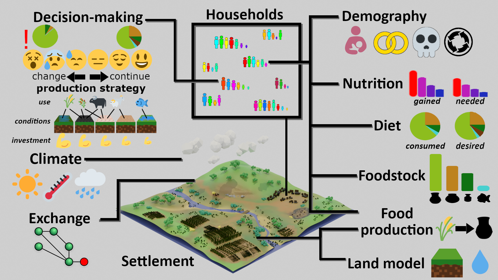
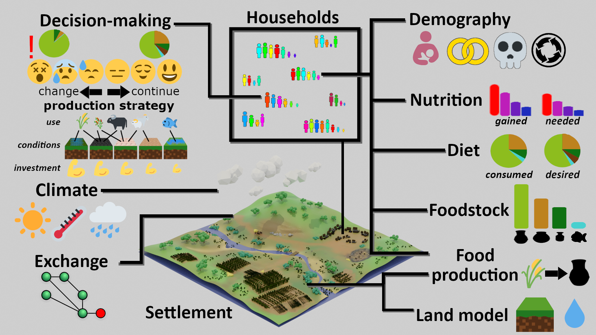

Understanding the Emergence and Sustainability of Early Urbanization
Insights from the Indus Village Model
Andreas Angourakis (@AndrosSpica)
https://andros-spica.github.io/CEPHCIS-Angourakis-2024/index.html?print-pdf (printable version)


- Introduction
- Background, context and question
- The 'downsizing' narrative
- Indus Village model
- Overview
- Land Crop model
- Household Food Economy model
- Discussion
- Conclusions
1. Introduction
1.1. Background, context and question
Indus Civilisation

Harappa.com, courtesy of Jonathan Mark Kenoyer

Indus Civilisation
Urban phase (c.2500-1900 BC)
- a.k.a. Indus Valley Civilisation, Harappa Civilisation
- first cities in South Asia
- five known major urban centres
- possibly ‘city-states’
- each up to 280 km apart
- urban material culture permeates their hinterlands


Long distance network

R. Law 2010


T. Wilkinson 2012, Randall Law, 2024


'TwoRains' project
ERC, 2015-2021
summer rain, winter rain
“Predictable unpredictability”
direct precipitation
+
Indus river catchment


Climate change

- Evidence from multiple climate proxies
- Urban phase
(Mature Harappan, c. 4.5 to 4.3 ka BP)
→ stronger winter precipitation - End of urban phase
(Mature to Late Harappan, >c. 4.1 ka BP)
→ decrease in both the summer and winter precipitation

{kind=link}
Crop economy
- barley/wheat (winter)
- millet/rice (summer)
- Pulses and other crops
- Non-crops (e.g. fruits)
- Plants for other uses
- Multi-cropping


Animal economy
- Animal husbandry:
zebu, water buffalo, sheep, goat, pig, chicken(?) - Fishing: freshwater fish and molluscs
- Hunting: wild ruminants, hare, birds
Joglekar, Sharada & Abhayan 2013
|
Chase, Meiggs & Ajithprasad 2020
Abhayan et al. 2020
|
Lightfoot et al. 2020
|
LJ Miller 2004
|
RP Wright 2010
Secondary products?
Herding?
Pack animals or goods?
4.png)


Food processing
Lipids residue analysis:
- C3 vs C4 plants signature
- Meat vs secondary products
- Ruminant vs non-ruminant fat

Stewing or roasting?
Are contemporary culinary practices a good reference?
Food exchange


Household autonomy, local reciprocity and/or market-like economy?
Do hinterlands feed urban centres?
1. Introduction
1.2. The 'downsizing' narrative
How does climate change cause de-urbanisation?
narrative → mechanism
"testable narrative"
emergent trade node hierarchy
'hubs' can emerge, fluctuate, and collapse if trade involves a positive feed-back loop
Urbanism is the product of a complex system
Local diversity hinders settlement rural-urban differentiation
diversity of small communities
→ adaptation to environmental unpredictability (local)
→ decreased production (regional)
→ decreased surplus directed to exchange
→ decreased urbanism


Climate adaptive pull
favourable conditions →
relaxation, risk taking, maximisers
unfavourable conditions →
stress, risk avoidance
Indus food economy builds up under increasing favorable conditions
and downsize back to local diversity
diversification as more stable strategy under uncertain conditions
The exchange network collapses
drought →
less production + more local diversity
→ less surplus
→ less exchange opportunities
→ less frequency of exchange
and less incentives for long-distance exchange
The subsistence crisis led to migration and abandonment of cities
insufficient exchange
→ insufficient food for urban inhabitants
→ urban population motivated to migrate:
- to rural settlements
- to other, wetter regions
2. Indus Village model
2.1. Overview
End-goals
Explore human adaptation to the variability
in landscapes of NW India during the Mature Harappan (urban phase of the Indus Civilisation)
Expose the sustainability of
food production regimes,
mainly in terms of cropping strategies,
in front of climate change


 


Modular design

- Implementation in NetLogo, documentation in pseudocode diagrams and R markdown
- parameter exploration (sensitivity analysis)
- scenarios (parameters, programmed trends
and changes, alternative algorithms) - Indus Village model repository
2. Indus Village model
2.2. Land Crop model
Crop model
Adapted from
the SIMPLE crop model
(Zhao et al. 2019)
- One model, many crops
- Crops defined by 13 parameters
- Integrates ARID
- Biomass growth: RUE modulated by temperature, CO2 and ARID
- A single growth phase (def. thermal time)
- Output: yield (g·m-2)
Crops - subset of Indus subset of Indus staple crops

variable in: season & cycle duration | RUE level | water stress sensitivity
Crop model | Yield & Seasonality
Crop model outcome (using input from Weather and Soil Water models)

← sample of terrains (created with Land model)
- Land Water + Crop = Land Crop
-
Land + Weather + Soil Water = Land Water
river inflow, run-off & inundation -
Crops as ecological components
water (aquatic) > crops > wood > brush > grass > bare soil -
Crop choice and management variables
- crop selection: which crops to grow
- cropping intensity:
% of land unit for all crops - crop frequency:
% of intensity for each crop - other: spacing, sowing/harvest dates
Land Crop model | Results
Impact of flooding areas dependent on water sensitivity


Land Crop model | Results
Experiment with randomised crop frequencies
(Local) crop niche gradient:
correlation between
land unit total yield
and
frequency of each crop.

2. Indus Village model
2.3. Household Food Economy model


under construction
Food Storage model

Food Storage model

Link to code (repository) | documentation under development
Food Exchange model

Food Exchange model

Link to code (repository) | documentation under development
Nutrition model


Nutrition model

Link to code (repository)
Household Demography model


Fertility & Nuptiality: Peristeva & Kostaki 2007; 2015
Mortality: Coale, Demeny, & Vaughan 1983 | Jones 2007, demogR package
Household growth and formation


Link to code (repository)
Effect of nutrition over mortality

Food Strategy model

- reinforced learning
- stimulus for change as degree of diet shortages
- food strategy → triplet use/activity, conditions, investment
- challenge: multidimensional state space, tryouts with high stakes
code and documentation under development
3. Discussion
Crop choice dilemma
which crops to grow in a land unit, given the mandate of producing a certain amount of yield
from a specific set of crops with diverse characteristics
- Crop selection & diversity
- Limited means of production and workforce
-
Condition vary:
- Local & regional environmental diversity
- Seasonality & Climate change
- No single optimal solution
crop choice dilemma
risk
- high-risk ("thirsty") vs
low-risk ("drought-resistant") - Why choose high-risk crops at all?
- condition A: crop value outweights the risk (e.g. cash crop)
- condition B: risk can be mitigated
risk-mitigation
- hydrophile: keep the water flowing
→ minimise the risk of high-risk crops - polyphile: keep it (agro)diverse
→ compensate the risk of high-risk crops - To be often combined locally,
also with other agronomic and economic strategies
See more at Angourakis et al. 2022
But how should households in "peri-urban" hinterlands, such as those of the Indus Civilisation,
solve this crop dilemma?
There is no "economic sphere" in isolation
sensu Marshall Sahlings, Karl Polanyi
Domestic Mode of Production
- Pooling of labour/resources for production/consumption
- Production for use value:
limited necessities, limited production effort, aggregate underproduction - Cohesive decision-making
- Household autonomy
→ interhousehold anarchy - Full independence, self-sufficiency
(theoretical state)

mod. from Sahlins 1972. Stone Age Economics, Fig. 3.1
work, but don't overwork


- Increasing production for exchange (intensification)
-
overproduction from household perspective
→ deviation from Chayanov's slope - Social complexity both as requirer and enabler
Exchange as reciprocity
- Strong rule of kinship
- Generalised, balanced and negative types
- Most regular exchanges entail pooling
- Tensions between production for use and production for exchange
(self-interest vs. moral obligations to kin)

mod. from Sahlins 1972. Stone Age Economics, Fig. 3.2
keep working,
no matter what
- Production decline may render pooling shares less barable
- Unbalanced exchange is perceived as exploitation
- Negative reciprocity (exploitation) weakens leadership
- Leadership needed for a "production for exchange" economy?
work makes you better, so do it more
Urban integration
- Pooling challenges increase with scale
- Households handling (recurrently) extra costs of exchanges
- Leaders (decision-makers, negotiators)
encourage pooling and domestic overproduction - Kinship displaced by ideology, authority and coercion in larger exchange networks

mod. from Sahlins 1972. Stone Age Economics, Fig. 3.3
4. Conclusions
-
Tension 1 - crop dilemma:
risk and risk mitigation -
Tension 2 - regional pooling:
exchange economy and use economy -
opposed principles from household perspective?
intensification and resilience -
Was the Indus Civilisation urbanism
a failed experiment? -
And why other forms (Sumer, Egypt) could overcome the same
climate crisis?
→ exploration Indus Village model
Acknowledgements
Thanks to the Land, Water and Settlement and TwoRains teams:
including
Jennifer Bates, Jean-Phillipe Baudouin, Alena Giesche, Joanna Walker,
M. Cemre Ustunkaya, Nathan Wright, Ravindra N. Singh,
Aftab Alam, Alessandro Ceccarelli, Sagorika Chakraborty,
Sudarshan Chakradhari, Arti Chowdhary, Yama Dixit, Charly French, Adam Green,
Henry Green, Lily Green, David Hodell, Penny Jones, Carla Lancelotti, Emma Lightfoot, Frank Lynam,
Sayantani Neogi, Hector Orengo, Arun Kumar Pandey, Danika Parikh, Vikas Pawar, Amit Ranjan,
David Redhouse, Dheerendra Pratab Singh, & Akshyeta Suryanarayan.
Special thanks also to the Department of AIHC and Archaeology, BHU, the European Research Council (ERC),
and the UK-India Education and Research Initiative (UKIERI) for support and funding, and to the Archaeological
Survey of India for permission to carry out the work.
THANK YOU FOR YOUR ATTENTION!
https://andros-spica.github.io/CEPHCIS-Angourakis-2024/index.html?print-pdf (printable version)
Image source: generated with Leonardo.AI